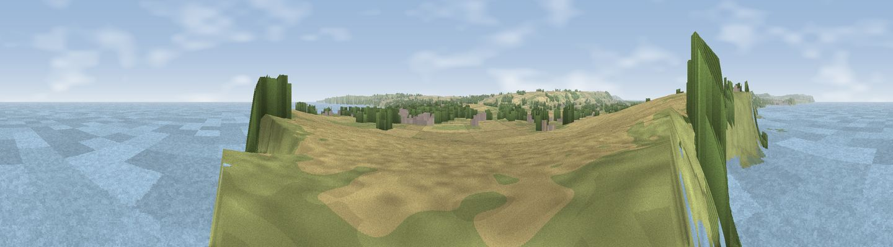

Viewpoint near Filey
#4164 in England · top 11% of its area beats it · near Filey · path 84 mWhere it is
The exact computed spot (TA 09350 83275). Click the marker for map links.
Public access: the nearest public right of way is about 84 m away — the final stretch may cross private land. Computed from Natural England's CRoW access layer and OpenStreetMap rights of way — not the legal definitive map. Always verify locally.
The view, rendered

A 360° render of this exact spot computed from the terrain model, tree cover and land cover — summer colours, afternoon light, calibrated against photographs of famous viewpoints. Real trees, hedges and buildings will differ in detail.
The panorama
Grey silhouette: terrain skyline in each direction (720 bearings, Earth curvature and refraction included). Dashed green: skyline with trees (+15 m) and buildings (+8 m) as obstacles. Blue strip: how far the ground is visible on each bearing.
Where the view opens
Wedge length = distance to the farthest visible ground on that bearing (vegetation-aware). Rings at 10, 25 and 50 km.
What fills the view
60% water · 13% grassland · 11% built-up · 9% cropland · 4% woodland · 3% wetland
Angular shares of the visible panorama (visual magnitude), not map area. Landscape diversity 0.55 (0–1 Shannon).
Key numbers
More beautiful places nearby
The staircase of upgrades: each row has a higher view potential than everything closer. Driving times are estimates from straight-line distance, calibrated against real road routing — check an actual route before setting out.
| Place | Direction | Drive | Score |
|---|---|---|---|
| Viewpoint near Osgodby | WNW · 2 km | ~4 min | 73.0 |
| Viewpoint near Osgodby | WNW · 4 km | ~9 min | 74.0 |
| Viewpoint near Osgodby | WNW · 5 km | ~11 min | 75.6 |
| Olivers Mount | NW · 6 km | ~14 min | 80.3 |
| Viewpoint near Ravenscar | NNW · 20 km | ~35 min | 82.7 |
| Viewpoint near Ravenscar | NNW · 22 km | ~36 min | 87.3 |
| Viewpoint near Ravenscar | NNW · 23 km | ~38 min | 90.0 |
| Viewpoint near Easington | NW · 51 km | ~72 min | 90.2 |
54.23351, -0.32387 · source: screening · position refined by local search. Computed location — check access rights before visiting.